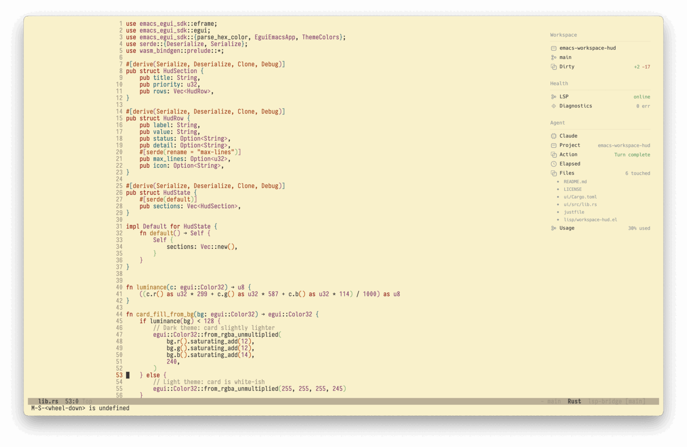
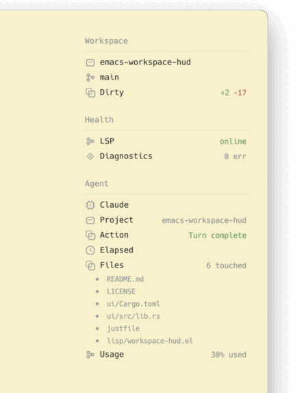

Emacsのフレーム右上に状態管理HUDがreditで紹介されていた
https://github.com/nohzafk/emacs-workspace-hud
https://www.reddit.com/r/emacs/comments/1tw7u87/i_built_a_floating_hud_for_emacs_rendered_in_rust/
HUD
Gitのブランチや変更ステータス、LSPの接続状態、flymake/flycheckのエラーなどの診断情報を確認できる。 Agent-Shellを使っている場合は、追加でagent-shell-hudを入れるとAgentの状態も見れて便利
https://github.com/nohzafk/agent-shell-hud


このライブラリでは、RustのGUIライブラリ「egui」を採用し、WASM（WebAssembly）にコンパイルした上でEmacsのxwidget経由で描画している。
xwidgetの利用はbuild時に(–with-xwidget)をつける必要がある。 emacs25以降でGUI環境で使っていれば基本的にはxwidgetがONになってるはず。
use-packageの設定は以下。
use-packageのvcでのinstallがうまくいかなかったので手元でbuild
Rustとjustは事前に入れておく https://github.com/casey/just
// hud
git clone --recurse-submodules https://github.com/nohzafk/emacs-workspace-hud.git \
~/src/emacs-workspace-hud
cd ~/src/emacs-workspace-hud
just setup
just wasm
// agent-shell-hud
git clone https://github.com/nohzafk/agent-shell-hudemacs-eguiへのpathも通さないとうまくうごかなかったので通しておく。 なぜかagent-shell-hudもstraightで取得できなかったので、ここではcloneしてload-pathを通す。
(add-to-list 'load-path "~/src/emacs-workspace-hud/emacs-egui/lisp")
(use-package workspace-hud
:straight nil
:ensure nil
:load-path "~/src/emacs-workspace-hud/lisp"
:custom
(workspace-hud-margin-top 43)
(workspace-hud-margin-right 50)
;; :config
;; (workspace-hud-auto-mode) ;;自動でhudをONにする場合
)
(use-package agent-shell-hud
:ensure nil
:straight nil
:load-path "~/src/agent-shell-hud"
:after (agent-shell workspace-hud)
;; :config
;; (agent-shell-hud-mode 1) ;;自動でhudをONにする場合
)所感
reditには「Emacsの『すべてはバッファである』という哲学に反する」や「サイドウィンドウやチャイルドフレームとElispだけで十分」などのコメントもあり確かにと思う。
一方で、xwidgetで描画することでレンダリングすることでブロックされずになめらかに表示できるので、可能性は感じる